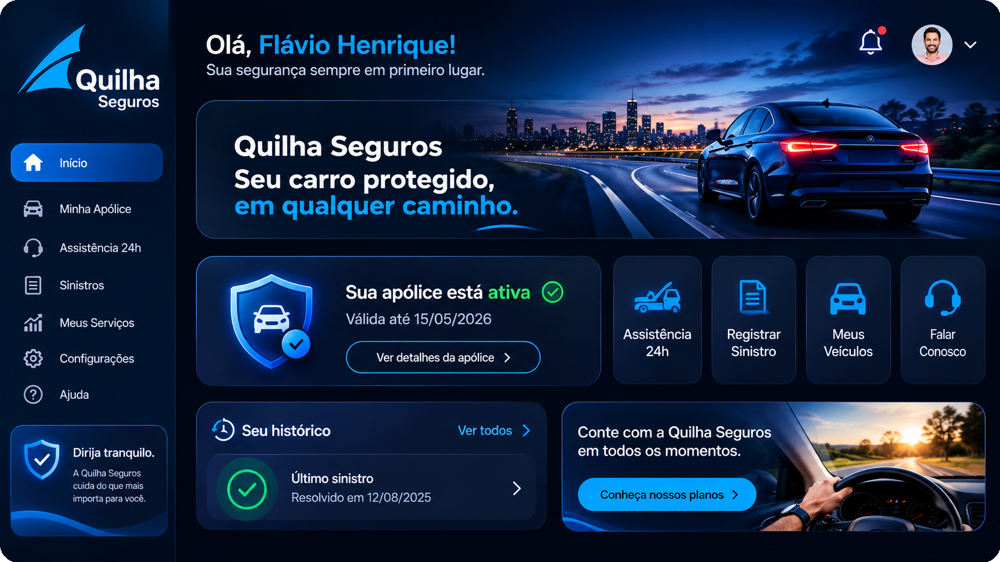

Priorização de Perícias em Sinistros de Automóvel
Quilha Seguros · Política de triagem orientada por dados, com capacidade mensal limitada
Python 3.12
Streamlit 1.67
XGBoost
Licença MIT

▶ Abrir o app interativo (Streamlit Cloud)
Escopo: projeto de estudo de caso, não é um sistema de decisão autônoma nem um serviço de produção.
O modelo prioriza a fila; a decisão de periciar continua humana.
Visão geral
O projeto aborda a alocação de 900 perícias por mês entre sinistros de automóvel.
Em vez de classificar casos por um limiar genérico, o Pipeline calcula um escore de priorização
e organiza a fila para que a equipe avalie primeiro os casos de maior prioridade estimada.
O artefato final é um Pipeline serializado (preparação, imputação e XGBoost), com
18 features conhecidas no momento da abertura do sinistro.
Resultados-chave (mês de teste)
R$ 3.731.700
Política de escore (mês)
−R$ 326.200
Regra atual (> R$ 50 mil)
R$ 4.057.900
Ganho por mês
22,56%
Precisão@900 (201 fraudes)
IC 95% do ganho: R$ 3.537.100 a R$ 4.665.500 · 11.904 sinistros no mês de teste.
Como usar o app
- Abra o app pelo botão acima.
- Fila do mês: visualize a fila ordenada por escore e ajuste o slider k.
- Sinistro individual: veja a explicação SHAP de um caso.
- Valor e governança: confira o ganho, IC e gatilhos de monitoramento.